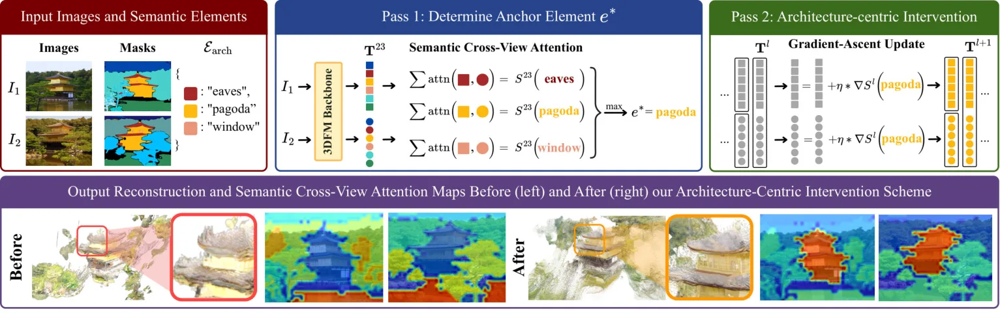
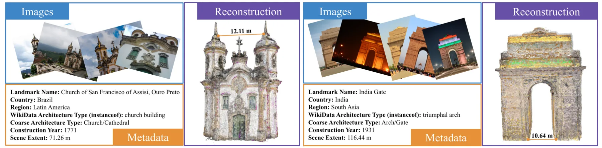
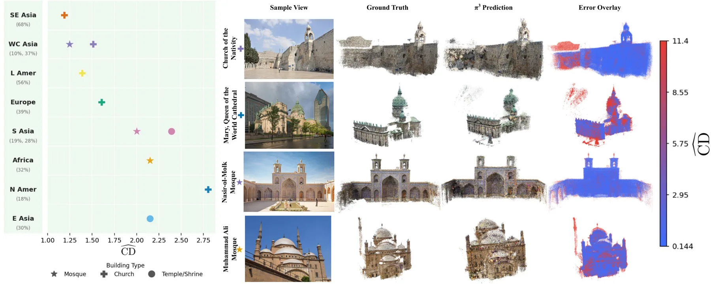
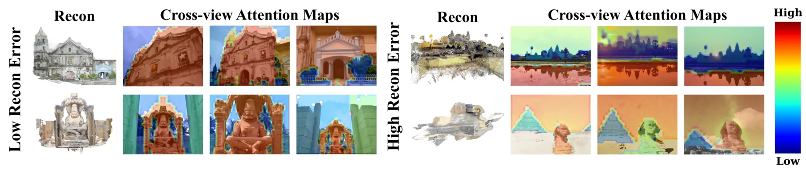
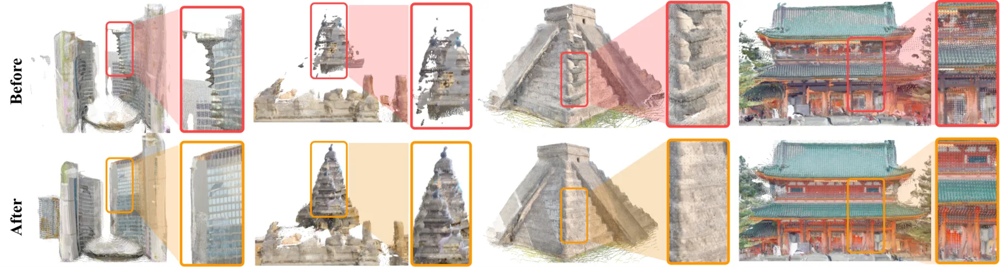

ArchWorld：在地理多样的建筑场景上审计 3D 基础模型
Towards Reconstructing Geographically Diverse Architecture with 3D Foundation Models
ArchWorld 用 396 个野外 landmark 场景（92K 图、64 国、8 个区域、平均 232 图/场景）建立带米制稠密真值的评测集，并在 VGGT、Depth Anything 3、π³ 三个 3DFM 上做按区域、按建筑类型的分解评测。整体中位 Chamfer 距离 π³ 0.154 m、VGGT 0.277 m、DA3 0.869 m，但 π³ 在东亚的中位归一化误差是东南亚的 2.05 倍（2.75 对 1.34），且族间差异无法用训练数据占比解释。作者据此提出免训练干预 ArchAttend：用语义跨视图注意力选中建筑锚点，再对 token 做一步梯度上升，DA3 全集中位归一化误差从 10.36 降到 8.92（−13.9%），北美从 18.83 降到 12.82（−31.9%）。
作者、单位与技术谱系 · Research context
作者与单位
研究脉络
- DUSt3R / MASt3R 点图回归线方法基座关系：把三维重建改写为前馈点图回归并提供对齐后的 Chamfer 评测协议，本文的 CD 指标与点图对齐方式直接沿用这一线。[论文第 2 节相关工作]
- VGGT：多视图统一前馈预测上游方法关系：把点图范式从成对扩展到上百视图并联合输出相机/深度/点图/3D 轨迹，是本文被评测的三个模型之一，也是误差下界的主要参照。[VGGT 论文（arXiv 2503.11651）]
- MegaScenes / MegaDepth-X 数据线数据基座关系：场景来自 MegaScenes 的互联网照片集与 WikiData 元数据，稠密真值沿用 MegaDepth-X 协议并新增 69 个场景以补地理覆盖。[论文第 3.2 节与表 1]
- ArchWorld + ArchAttend（本篇）本篇推进关系：把上述表示与数据线组合成一个可分解评测的基准，并把误差分析推进到“注意力分配”这一内部机制。[论文第 5 节与项目页]
合作网络
- Cornell Tech 与 ArchWorld 官方仓库Cornell Tech, Cornell University → github.com/Cornell-VAILab/ArchWorld关系：官方代码仓库（机构组织账号）[GitHub 仓库]
- ArchWorld 项目页论文作者 → arch-world.github.io关系：作者维护的项目页[项目页]
- ArchWorld 与 MegaScenes 的数据派生关系MegaScenes → ArchWorld关系：数据派生（筛选与再标注）[论文第 3 节]
作者与单位来自论文首页署名栏；脉络条目基于论文自身相关工作与引用关系，属“有来源的解读”，未推断导师或师生关系；合作网络只记录官方仓库、项目页与明确的数据派生，未发现作者层面的跨机构共同署名边。
方法本质拆解 · What actually changed
是不是微调？
不是。基准构建是纯数据工作，三个 3DFM 全部用官方权重与默认设置直接推理，没有任何再训练；ArchAttend 也明确冻结所有参数。唯一“学习”的成分是 token 级的一步梯度上升，它发生在推理时、不落盘、不改权重。
有没有额外约束？
干预引入的约束是语义性的：先用 SAM 3 掩码把 patch 归到建筑元素或非建筑元素，再要求注意力向得分最高的建筑锚点集中。基准侧则加了 compat 约束——只用 ≥50 张注册图的 COLMAP 重建、人工剔除非人造与室内场景、人工 3D landmark mask 限定误差统计范围，并用 Google Earth 标定米制尺度。
推理/后端到底做了什么？
推理变成两遍前向：第一遍照常得到点图并抽取最后一层全局注意力，按元素聚合 SCVA 选锚点；第二遍在前向中途对 token 施加一步梯度上升后继续，输出新的点图。没有 BA、没有位姿优化、没有多视图重投影校正，也没有对点云做后处理滤波，因此增益完全来自表示层面的注意力重分配。
方法本质是什么？
本质是把“重建误差的地理差异”拆成可测量的场景属性，再用模型内部的注意力分布作为中介变量去干预它：高误差场景的跨视图注意力泄漏到天空/植被等无语义区域，导致对应关系变弱；把注意力推向建筑锚点后，对应关系变强、误差下降，且原本最差的区域受益最大。它没有提升模型容量，也没有改变训练分布，只改变了推理时信息流向。
输入是野外照片集与分割掩码，改动位置在 3DFM 的中间 token 表示，通过“语义锚点 + 单步梯度上升”把跨视图注意力拉回建筑，直接效果是点图误差下降且区域间差距收窄。

结论与问题Conclusion & Motivation
核心结论
ArchWorld 的核心结论有两层。第一层是测量：现有 3DFM 在野外 landmark 照片集上的绝对误差仍然很大，π³ 的中位 Chamfer 距离 0.154 m、VGGT 0.277 m、DA3 0.869 m，而这已经是当前最强的一批模型。第二层是归因：区域差异并不等于训练数据不足，π³ 在东南亚（0.08 m）最好、北美（0.36 m）最差，而北美在训练数据里排第二多，作者把原因指向摩天楼尺度、密集城市背景干扰与建筑类型本身的难度。这两个结论一起说明，3DFM 的评测不能只报一个全局平均，必须按区域与建筑类型分解，否则会把“场景更难”误读成“模型更差”。
动机与问题
3DFM（DUSt3R、MASt3R、VGGT 一系）已经能在一次前馈里同时给出相机、深度与点图，但它们在真实互联网照片集上的失败模式还没有被系统审计过。已有工作多把失败归给视角稀疏或覆盖不均，并用微调去补，缺少对“哪些场景、哪类建筑、为什么失败”的分解分析。作者关心的现实风险是文化遗产数字化：如果某些地区或建筑类型系统性地重建更差，技术扩散会反过来加剧文化表征的不平衡。因此问题被定义成：先造一个地理上真正均衡、带米制稠密真值的基准，再把误差拆到区域与建筑类型两个维度上，最后用模型内部证据解释差异来源。
方法Method
方法总览
基准侧：从 MegaScenes 出发，按 WikiData 国别映射到 8 个区域，每区至少 25 图/50 注册图筛选，最终 396 个场景、64 国、每区 ≥40 场景、平均 232 图；稠密真值沿用 MegaDepth-X 协议并新补 69 个场景，全部人工检查（两名作者，50 场景验证集 Cohen Kappa 0.76）。每个场景用 Google Earth 交叉比对标注米制尺度（重复三次取平均），并用人工 3D landmark mask 把误差限制在目标建筑上。评测侧：Chamfer 距离乘尺度因子得到米制 CD，同时提出按包围盒归一化的 CD̂ 以消除场景尺度影响。干预侧 ArchAttend 是两遍推理：第一遍用 SAM 3 语义掩码聚合跨视图注意力选出建筑锚点元素，第二遍冻结全部参数、只对进入全局注意力前的 token 做一步梯度上升，把注意力从天空/植被拉回建筑。
关键技术细节
语义跨视图注意力 SCVA 的定义是：对属于元素 e 的 patch i，把它在其他视图里落到同一元素 patch 集合上的注意力求和，再按元素累加得到元素级得分，取得分最高的建筑元素作为锚点。干预只改 token 表示、不改权重，因此不需要重训，也不需要真值；代价是需要外部分割模型（SAM 3）和一次额外前向。归一化指标 CD̂ 的设计动机很具体：同一相对误差在大场景上会产生更大的米制 CD，跨区域比较会被场景尺度污染，所以作者同时报告 CD 与 CD̂，并说明用 CD̂ 后区域差异与数据代表性的相关性只是“略微变好”，仍不能解释全部差异。作者还验证了 ArchWorld 与 MegaDepth（VGGT、DA3、π³ 训练集中唯一的互联网照片集）无重叠，以降低测试污染。

实验Experiments
实验设置
数据规模为 396 个场景、约 92K 张图、64 个国家、8 个区域（非洲、东亚、欧洲、拉美、北美、南亚、东南亚、西亚/中亚），每区 40–53 个场景。被评测模型三个：VGGT、Depth Anything 3、π³，均按其官方默认设置推理，评测指标为米制 CD 与归一化 CD̂（中位数 + 四分位距）。干预实验主要在误差最大的 DA3 上做，步长 η 在 5 个候选值里逐场景取最优，另外报告单一步长（场景无关）的设置。计算成本为单张 H200（141 GB），完整跑一遍数据集约 7 小时，这个数字对想复现的人是硬门槛。
实验数字与比较
整体（表 7）：π³ 中位 CD 0.154 m / CD̂ 1.753，VGGT 0.277 / 3.279，DA3 0.869 / 10.360，最好与最差相差 5.6 倍。分区（表 2，π³）：东南亚 0.08 m（CD̂ 1.34）、西亚中亚 0.13（1.43）、南亚 0.14（1.48）、拉美 0.14（1.68）、非洲 0.17（1.97）、欧洲 0.19（2.24）、东亚 0.25（2.27）、北美 0.36（2.75）；东亚的中位 CD̂ 是东南亚的 2.05 倍，四分位距 4.76 对 1.20，接近 4 倍。建筑类型（π³）：教堂 CD̂ 1.43（IQR 1.00）、清真寺 1.91（1.56）、寺庙 2.16（3.48）。干预（DA3）：全集中位 CD̂ 10.36→8.92（−13.9%），79.6% 的场景改善；北美 18.83→12.82（−31.9%），Tower 类型 21.04→16.29（−22.6%）；区域极差 11.26→6.96（−38.2%），建筑类型极差 13.75→9.14（−33.5%）。
消融/失败边界
步长选择是这套方法最脆的地方：主结果取 5 个 η 里逐场景最优，本质上是带真值的选择，因此 −13.9% 应读作上界；作者自己报告单一步长（场景无关）只能补上约 41.7% 的区域差距，这才是可部署条件下的数字。归一化的作用也有边界：作者明确指出用 CD̂ 后区域差异与数据代表性的相关性只是“略微更一致”，仍属弱相关，说明尺度不是主因。定性失败模式集中在细长结构（清真寺宣礼塔）与密集城市背景（北美），后者会引入虚假几何抬高误差；这说明误差里有相当一部分来自“非目标结构”，与 landmark mask 的处理方式强相关。此外，基准只有室外场景、只有互联网上被拍得多的建筑，因此“地理多样”是在可达性偏差之内成立的。
局限与迁移Limitations & Transfer
局限与待核验
作者承认的限制有五条：八个大区域的划分未必对应所有下游关心的地理区分；只覆盖室外；场景与 MegaDepth-X 有重叠，未来若被用于训练会削弱其 held-out 价值；只包含“被充分拍摄”的建筑；ArchAttend 改善后点云在细尺度上仍模糊或噪声大。我们的待核验项：逐场景最优 η 的选择在实际系统中不可得，需要用无真值的准则替代（作者称目视点云可判断步长，但没有量化协议）；SCVA 与误差的因果关系只有相关性与可视化，没有干预前的因果检验；SAM 3 分割失败会直接决定锚点选择，论文未报告分割失败率；报告用的是中位数与 IQR，没有逐场景均值与显著性检验。
与你研究路线的关系
对可靠状态估计最直接的可迁移物是评测协议而不是模型：CD 与 CD̂ 的双报告、按尺度归一化、按场景规模分层，这套做法可以直接搬到点云地图/深度补全的验收里，避免“大场景误差天然更大”掩盖真实退化。第二个可迁移物是 ArchAttend 的诊断思路：把内部跨视图注意力按语义元素聚合，用“注意力是否泄漏到非结构区域”作为失败预警信号，这比只看重投影误差更能指出原因。第三个是免训练干预的形态：冻结权重、只改中间表示、单步梯度，这种低成本后处理适合放在已有 pipeline 末端做兜底。下一步可做的实验：在你自己的序列上固定同一重建，比较“原样 / 注意力引导 / 仅按语义掩码加权损失”三种设置，看误差下降是否真的来自对应关系改善而不是分辨率效应。







